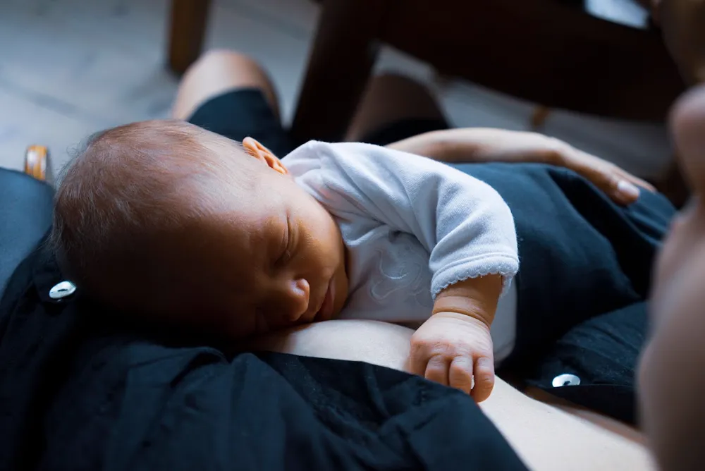

O que ninguém te contou sobre o sono do bebê no berço
Conheça os 5 principais motivos e o que fazer em cada um deles
 Por Dayane Dos AnjosConsultora de sono
Por Dayane Dos AnjosConsultora de sono
1
Conheça os 5 principais motivos e o que fazer em cada um deles
Por Dayane Dos AnjosConsultora de sono
Se o seu bebê só dorme no colo, briga contra o sono ou tem muitos despertares durante a noite, ele está precisando de ajuda para encontrar o caminho do sono. E isso não é falta de jeito sua.
Seja muito bem-vinda a este e-book, criado com muito carinho para te ajudar a entender por que o seu bebê não está dormindo bem no berço e, principalmente, como mudar isso de forma gentil e eficaz.
Depois de acompanhar milhares de famílias, percebi que existem 5 motivos principais que dificultam o sono do bebê no berço. Este material foi criado para te ajudar a identificar se algum deles está acontecendo por aí e o que você pode fazer para melhorar.
Vamos começar? ↓

Muita gente acredita que, com o tempo, o bebê vai começar a dormir melhor sozinho. Mas a verdade é que o sono é uma habilidade que se aprende. Todos nós, para adormecer, precisamos relaxar e encontrar o caminho do sono. Com o bebê não é diferente.
O bebê aprende a dormir no berço quando a família ensina. Não depende de sorte, idade ou acaso. Quando ele aprende o caminho do sono, consegue emendar os ciclos de sono sozinho, de maneira natural, sem precisar da ajuda de um adulto a cada despertar. Isso transforma completamente a qualidade do sono do bebê e, por consequência, da família toda.

Você já deve ter ouvido falar que é preciso esperar o bebê completar 4, 5 ou 6 meses para ensinar autonomia de sono, porque antes disso não seria possível. Isso acontece porque, para essas pessoas, o único caminho para ensinar o bebê a dormir no berço é deixá-lo chorando.
Elas acreditam que, a partir de certa idade, o bebê não precisa mais mamar à noite e que, se ele chora, é por manha, não porque precisa de alguma coisa. Então, para resolver, basta deixá-lo chorando até que pare.
Esse não é o caminho em que eu acredito e que eu ensino. Eu gosto de mostrar para as famílias como conduzir o bebê para a autonomia de sono, sem deixá-lo chorando, mas com presença e de forma suave.

Mesmo dormindo tranquilamente no colo dos pais, o bebê pode aprender a dormir no berço.
Existe um passo a passo para isso, de forma gradual. O bebê vai aprendendo a dormir sem o contato físico dos pais, aos poucos, com muita presença e acolhimento. É tão suave que ele nem percebe que está passando por esse processo.
Isso não significa que vai levar meses para aprender. Dependendo do ponto em que você está e das dificuldades que seu bebê tem para dormir, são necessários pouquíssimos dias para implementar as mudanças e começar a perceber resultados. É por isso que eu digo que um bebê, desde recém-nascido, pode dormir bem no berço.
Afinal, até poucos dias antes de nascer, o bebê já adormecia e emendava os ciclos de sono sozinho, ainda na barriga. Essa é uma habilidade que já vem com ele.
A gente só precisa manter essa habilidade e adaptar o bebê ao berço. E, caso ele já esteja maior e tenha desaprendido, é possível retomar esse caminho de forma gradual e gentil.
Sabe aquele momento em que o bebê está claramente exausto, mas parece resistir ao sono? Ele chora, se irrita e nada parece funcionar?
Não é que o bebê não queira dormir. Ele precisa, mas não consegue. Está tão cansado e exausto que não consegue relaxar e adormecer.
Os bebês entendem o sono como um desconforto, o que de fato é. Mas o que eles não sabem é como resolver esse desconforto para voltar a ficar confortáveis. E, nesse caso, a solução é dormir. É por isso que o bebê precisa da nossa ajuda para encontrar o caminho do sono e descansar.
Se o seu bebê briga muito contra o sono, é porque está entrando no que chamamos de efeito vulcânico. E precisamos evitar isso.
Ele precisa adormecer antes de chegar a esse ponto, quando está tão cansado, irritado e estressado que não consegue relaxar.
Para isso, é preciso organizar a rotina do seu bebê de acordo com as necessidades dele. Eu te mostro como fazer isso no link abaixo.
QUEROMuitas mães pensam que o motivo do bebê não dormir no berço é algum desconforto. E isso pode acontecer.
Mas precisamos pensar que, se o bebê está com algum desconforto abdominal, ele também sentiria esse desconforto no colo.
Então, se ele consegue dormir tranquilamente no colo, mas acorda quando é colocado no berço, precisamos olhar para a dificuldade em aceitar o berço, em vez de atribuir automaticamente o despertar a um desconforto abdominal.
A cólica é uma dor abdominal que pode ser muito intensa e que vai e volta. O bebê pode senti-la várias vezes durante o dia e por vários dias seguidos. Quando isso acontece, é preciso conversar com um médico para avaliar a situação e orientar os cuidados necessários.

A disquesia é a dificuldade de coordenar os músculos para conseguir fazer cocô. Já os gases são naturais, afinal, todos nós temos gases.
Essas situações podem causar desconforto e atrapalhar o descanso, mas não significam que o bebê seja incapaz de dormir bem no berço.
Como são comuns, principalmente nos primeiros três meses de vida, existem estratégias que podem ajudar a contornar esses desconfortos.
Gases, cólica e disquesia são comuns nessa fase, mas não precisam ser um obstáculo permanente para o sono no berço.
Se o bebê consegue relaxar e dormir no colo, podemos ajudá-lo a aprender a relaxar e dormir no berço também. No próximo tópico, eu explico por que isso acontece e como ajudá-lo nessa situação.

Por mais gostoso que seja ter o bebê nos braços, chega uma hora em que todos precisam descansar. O problema não é o colo, mas o bebê só conseguir dormir dessa forma. Ensinar o bebê a dormir no próprio espaço, com carinho e segurança, é um presente para ele e para você.
Nós sabemos que dormir em um colchão adequado é uma forma confortável de descansar. Quando o bebê cria o hábito de só dormir no colo, além de prejudicar o conforto dele e da família, também pode criar o que chamamos de associação negativa de sono. Associação negativa é tudo aquilo que prejudica a qualidade do sono do bebê.
Muita gente confunde mamar antes de dormir com uma associação negativa. Mas mamar e adormecer é natural para os bebês, assim como acontece com outras espécies. Então, não se preocupe se o seu bebê mama antes de adormecer.
A questão não está em mamar e adormecer, mas sim em aceitar dormir no berço. Isso mostra que a dificuldade não está relacionada ao peito, mas ao hábito de dormir apenas no colo.
Nesse caso, o bebê está acostumado a dormir coladinho no adulto, sentindo o cheiro, o calor e as batidas do coração. É algo muito fofo e aconchegante.
Porém, o berço não tem nada disso. O bebê pode ter esse contato em vários momentos do dia, mas, na hora de dormir, é muito importante para o descanso de todos que ele consiga dormir tranquilamente no berço também.
Para isso, é necessário adaptar o bebê ao berço, ensinando-o a dormir ali. Se simplesmente colocarmos o bebê no berço, é natural que ele acorde logo em seguida e chore, porque ainda não está pronto para essa mudança. Antes disso, precisamos ajudá-lo a se adaptar.
E o caminho para isso não é deixá-lo chorando sozinho até que durma de exaustão. Existe outra maneira de adaptar o bebê, com carinho e de forma gradual. É o que eu ensino para as minhas alunas, por meio de uma maneira que desenvolvi para ajudar o bebê a dormir sem estar coladinho nos pais.
É tão gradual que o bebê aprende dormindo, sem nem mesmo perceber. E logo vai parecer que sempre dormiu assim. Eu te mostro como fazer isso no link abaixo.
QUERODurante o sono noturno, todos nós temos vários microdespertares. Isso acontece também com os adultos. Nós nos mexemos, mudamos de posição e, na maioria das vezes, voltamos a dormir sem nem perceber. Só despertamos completamente quando precisamos de alguma coisa, como ir ao banheiro ou tomar um copo d'água.
Com o bebê não é diferente. Durante o sono, ele também passa por vários microdespertares e precisa voltar a dormir.
É por isso que a forma como o bebê adormece é tão importante. Afinal, a cada microdespertar, ele precisa conseguir voltar a dormir para emendar os ciclos de sono. Mas como ele vai voltar a dormir se ainda não sabe adormecer sozinho?
É por isso que o bebê tem tantos despertares. A cada microdespertar, ele precisa voltar a dormir e, se ainda não sabe fazer isso sozinho, acaba precisando da ajuda de um adulto.
Quando desenvolvemos a habilidade de autonomia de sono no bebê, isso não acontece mais. Ele aprende a voltar a dormir sozinho, de forma tranquila. Assim, consegue emendar os ciclos de sono e só desperta durante a noite quando realmente precisa de algo, seja para se alimentar ou por qualquer outra necessidade. Mas, quando se trata apenas de voltar a dormir, ele já conhece o caminho e consegue fazer isso sozinho, de forma tranquila, sem interromper ou atrapalhar o próprio sono.
Autonomia de sono é a capacidade de adormecer e emendar os ciclos de sono de maneira natural. Para desenvolver essa habilidade, é preciso ensinar ao bebê o caminho do sono.
E, para isso, não é necessário deixá-lo chorando no berço, nem ficar pegando e colocando de volta repetidas vezes, até que todos fiquem extremamente cansados e irritados. Muito pelo contrário.
Eu criei o método de sono Dream Baby, no qual ensino aos pais o caminho para ajudar o bebê a se adaptar ao berço, dormir tranquilamente, em segurança, e ter um sono reparador.
Esse é o caminho para a autonomia de sono, de forma gradual e gentil, com muito contato, cuidado e carinho dos pais. No botão abaixo, eu te mostro como funciona.
QUEROAgora que você entende o que pode estar por trás das noites mal dormidas, é hora de mudar a estratégia.
Com amor, paciência e orientação, você pode ensinar o seu bebê a dormir bem no berço, sem choro, sem traumas e no tempo dele. E eu posso te ajudar com isso.
Você não precisa deixar seu bebê chorando para que ele durma bem. Existe um jeito leve, gentil e eficaz, com segurança, acolhimento e sem traumas.
O método Dream Baby ensina o seu bebê a dormir no berço de forma gentil, respeitosa e eficaz.
R$ 67
à vista no Pix, ou 12x de R$ 6,89
QUERO!!Olá, eu sou a Dayane Dos Anjos, mãe, consultora de sono, amamentação e cuidados com o bebê.
Depois de acompanhar milhares de famílias, percebi que existem 5 motivos principais que dificultam o sono do bebê no berço. Foi por isso que criei o Dream Baby: um método que ensina o seu bebê a dormir no berço de forma gentil, respeitosa e eficaz.
Em cerca de 30 minutos você responde o quiz, descobre o perfil e já sai com o passo a passo na mão pra aplicar já na próxima soneca.
Funciona pra bebês de 0 a 12 meses. E se você é gestante, dá pra já chegar preparada antes do bebê nascer.
O método trabalha de forma gradual e respeitosa, sem deixar o bebê chorar. A ideia é uma transição suave, no ritmo dele, pra que se sinta confortável e protegido no berço.
O plano parte do quiz, então é montado a partir das respostas sobre o SEU bebê. E você ainda leva os cinco perfis, pra qualquer fase que vier.
Com certeza. Organizar as sonecas facilita tudo. É importante que o bebê descanse bem de dia pra ter um sono noturno de qualidade também.
Essa é a versão pocket do Dream Baby: direta ao ponto, focada no perfil do seu bebê, com aula objetiva e passo a passo. Ela não inclui o acompanhamento individual (que faz parte da versão completa). Mas, se você sentir necessidade, dá pra contratar à parte.
Cartão de crédito, Pix, PayPal ou Google Pay. No cartão você pode parcelar em até 12x. O pagamento é 100% seguro.
Você tem 7 dias de garantia incondicional. Se por qualquer motivo não se adaptar, é só pedir o reembolso direto na Greenn dentro do prazo. Sem perguntas e sem burocracia.
Após a confirmação do pagamento, o acesso chega no seu e-mail. O conteúdo fica disponível por 12 meses na plataforma.

Você está fazendo um trabalho incrível, mesmo nos dias mais desafiadores. O Dream Baby Pocket foi feito pra resolver exatamente o que você acabou de reconhecer no seu bebê: ensinar ele a dormir no berço, de forma leve e acolhedora.
Vamos juntas?
QUERO DREAM BABY POCKET · R$67 QUERO DREAM BABY POCKET + ACOMPANHAMENTO · R$147Com carinho,Dayane Dos Anjos